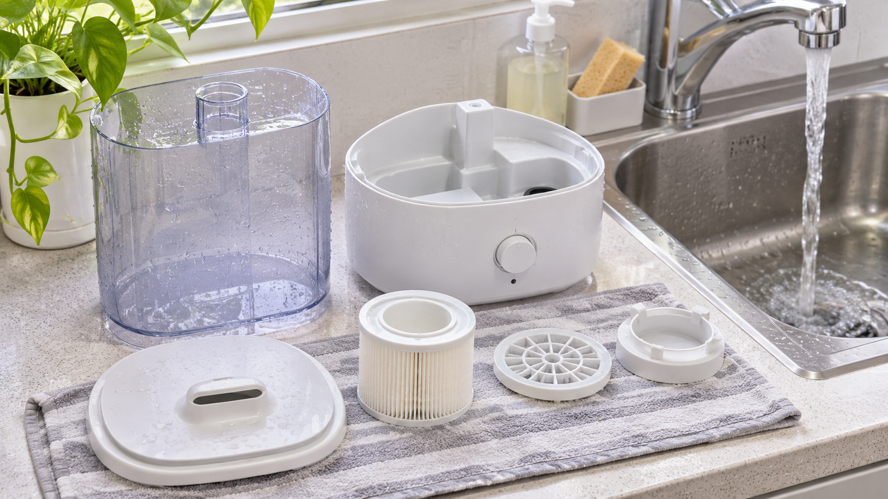

가습기는 남은 물을 매일 버리고 물통과 물이 닿는 부분을 헹군 뒤 완전히 말리는 것이 기본입니다. 세척제 사용 여부와 분해 범위는 방식·모델마다 다르므로 설명서를 우선하세요.
| 주기 | 할 일 |
|---|---|
| 매일 | 남은 물 버리기, 물통 헹구기 |
| 주 1회 안팎 | 물때 확인, 허용된 방법으로 세척 |
| 보관 전 | 완전 건조, 필터 상태 확인 |
염소계 표백제와 산성 세정제를 섞거나 본체 전기부를 물에 담그지 마세요.
패킹 곰팡이가 지워지지 않거나 필터가 손상됐거나 본체 내부로 물이 들어가면 점검이 필요합니다. 가습기 냄새 해결법과 가습기 누수 점검법도 참고하세요.
제품별 차이가 있으므로 제조사 공식 사용설명서와 고객지원 안내를 우선 확인하세요.